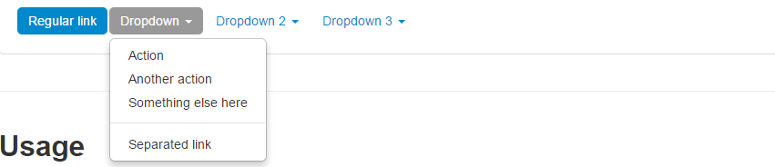
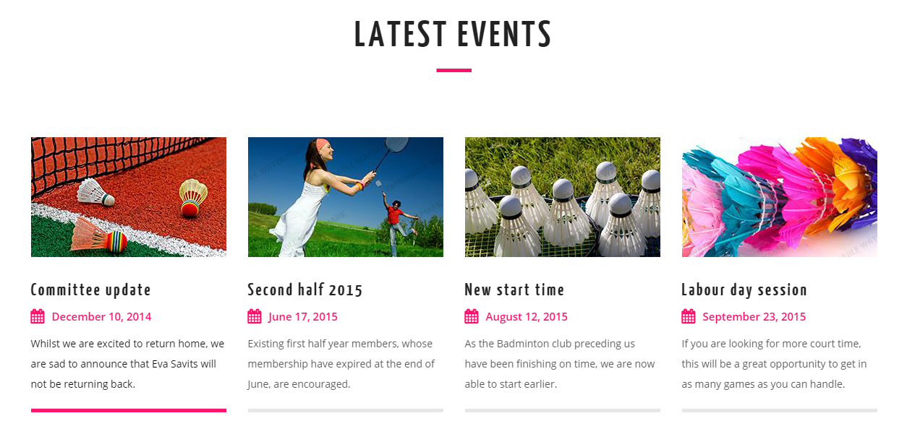
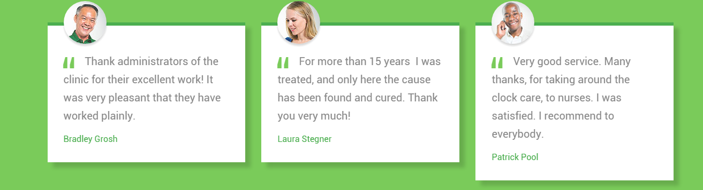
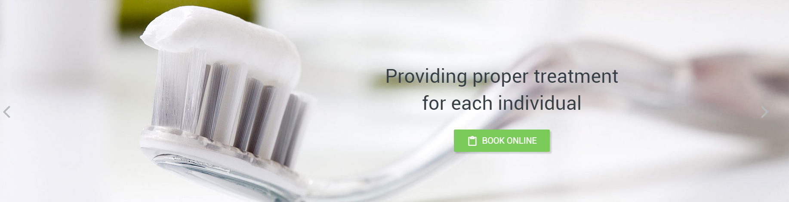

I'm Michael Mazur a current Front-End and Web Application Developer living in sunny Florida! I'm very passionate about clean and efficient code. I currently love to utilize HTML5, CSS3, JavaScript, JQuery, PHP, MySQL, and other front-end frameworks.
I love to both develop and design, but will have to say my passion is in developing and software engineering!
Components
Search/Filter Section
What I hope to Practice/Learn?
With this featured component I hope to practice my ability to create a solid JQuery based Search area. Where the user can have a drop down or click a filter button to show search options to get the best results!
How this relates to what I have/will learn?
From what I will learn in WDD I will be required to create amazing user experiences for users utilizing an app I will have to create which could utilize a search option to filter through a database and pull the corresponding data the user is searching for!
Style Guide
Colors: #1F96C3, #FFFFFFF, #FF7600
Fonts: Roboto, sans-serif
How I will construct this.
1. Create the component as a < section >.
2. Using a form with input fields and labels for each corresponding item.
3. Create another section of the form but have it hidden in a div.
4. Utilize JQuery to show the other field options on the filter or drop down button.
5. Automatically have set options if the user doesn't click the drop down.
Drop Down Menu

What I hope to Practice/Learn?
I hope to practice my ability to create different options for my drop down menus and to master the art to make sure I implement it seamlessly into my future projects.
How this relates to what I have/will learn?
Any project I work on throughout my time with Full Sail, and even out of class will have some sort of drop down menu that I will have to create or edit in some way.
Blog Posts/Latest Posts

What I hope to Practice/Learn?
I hope to practice my ability to create a great looking latest blog posts that I can implement in future websites.
How this relates to what I have/will learn?
This relates to the use of structure to create a grid layout to organize the blog posts into a latest posts section.
Testimonial Section

What I hope to Practice/Learn?
I hope to practice my ability to create testimonial sections and add the design ability to add client images and place them accordingly in each testimonial box.
How this relates to what I have/will learn?
This relates to being able to create a grid of testimonials and the ability to float and align elements to stylize them accordingly.
CTA

What I hope to Practice/Learn?
I hope to practice my ability to create a solid CTA. CTA's are a key aspect of user experience and providing a great way to present important data and promotions.
How this relates to what I have/will learn?
It relates to the ability to utilize JQuery to create a solid CTA .